| bill_length_mm |
|---|
| 39.1 |
| 39.5 |
| 40.3 |
| 36.7 |
| 39.3 |
| 38.9 |
| 39.2 |
| 41.1 |
| 38.6 |
| 34.6 |
| 36.6 |
| 38.7 |
| 42.5 |
| 34.4 |
| 46.0 |
| 37.8 |
Summarizing Numerical Data
Seeing the forest for the trees.
- Man feigns madness, contemplates life and death, and seeks revenge.
- Son avenges his father, and it only takes four hours.
- A tragedy written by the English playwright around 1600.
- 29,551 words on a page.
You may recognize each of these as summaries of the play, “Hamlet”. None of these are wrong, per se, but they do focus on very different aspects of the work. Summarizing something as rich and complex as Hamlet invariably involves a large degree of omission; we’re reducing a document of 29,551 words down to a single sentence or phrase, after all. But summarization also involves important choices around what to include.
The same considerations of omission and inclusion come into play when developing a numerical or graphical summary of a data set. Some guidance to bear in mind:
What should I include?
- Qualities relevant to the question you’re answering or claim you’re making
- Features that are aligned with the interest of your audience
What should I omit?
- Qualities that are irrelevant, distracting, or deceptive
- Replicated or assumed information
In these notes we’ll keep this guidance in mind as we discuss how to summarize numerical data with graphics, in words, and with statistics. Specifically, we will learn how to:
- Summarize one numerical variable
- Summarize one numerical variable broken up into levels of a second, categorical variable.
Summarizing two numerical variables is a task which deserves its own set of notes; that set of notes will come later on!
Constructing Graphical Summaries
Let’s turn to an example admittedly less complex than Hamlet: the Palmer penguins. One of the numerical variables Dr. Gorman recorded was the length of the bill in millimeters. The values of the first 16 penguins are:
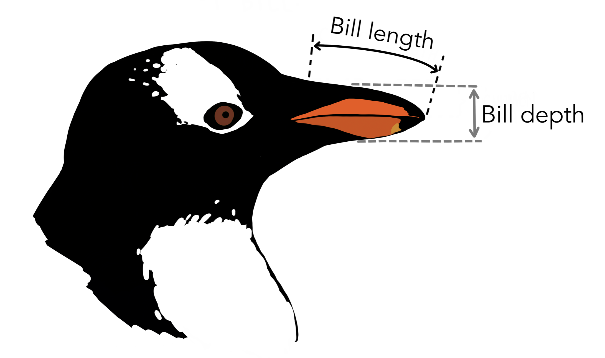
We have many options for different plot types that we could use to summarize this data graphically. To understand the differences, it’s helpful to lay out the criterion that we hold for a summary to be a success. Let’s call those criteria the desiderata, a word meaning “that which is desired or needed”.
For our first graphic, let’s set a high bar.
The most commonly used graphic that fulfills this criterion is the dot plot.
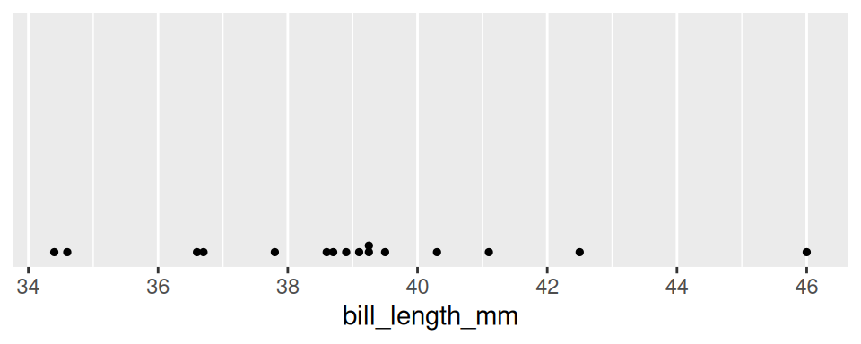
The dot plot is, in effect, a one-dimensional scatter plot. Each observation shows up as a dot and its value corresponds to its location along the x-axis. Importantly, it fulfills our desiderata: given this graphic, one can recreate the original data perfectly. There was no information loss.
As the number of observations grow, however, this sort of graphical summary becomes unwieldy. Instead of focusing on the value of each observation, it becomes more practical to focus on the general shape of the distribution. Let’s consider a broader goal for our graphic.
There are several types of graphics that meet this criterion: the histogram, the density plot, and the violin plot.
Histograms
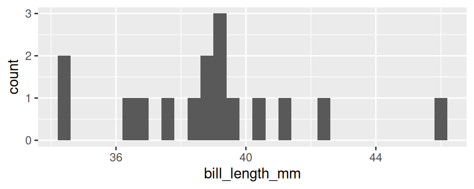
At first glance, a histogram looks like deceptively like a bar chart. There are bars arranged along the x-axis according to their values with heights that correspond to the count of each value found in the data set. So how is this not a bar chart?
A histogram involves aggregation. The first step in creating a histogram is to divide the range of the variable into bins of equal size. The second step is to count up the number of observations that occur in each bin. In this way, some observations will have their own bar (every bar with a count of one) but other observations will be aggregated into the same bar: the tallest bar, with a count of 3, corresponds to all observations from 39.09 to 39.30: 39.1, 39.2, and 39.3.
The degree of aggregation performed by the histogram is determined by the binwidth. Most software will automatically select the binwidth1, but it can be useful to tinker with different values to see the distribution at different levels of aggregation. Here are four histograms of the same data that use four different binwidths.
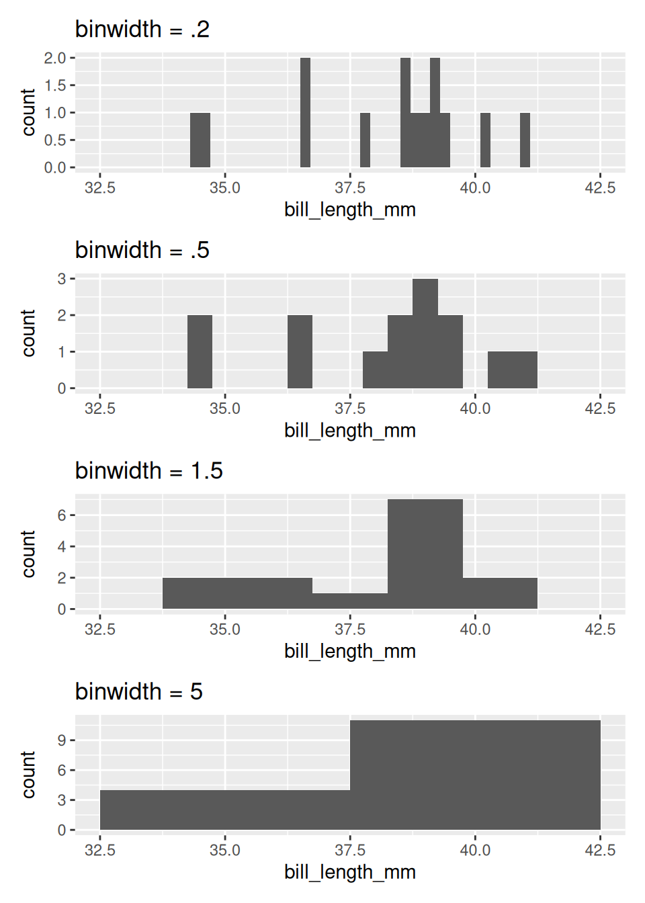
If you are interested in only the coarsest structure in the distribution, best to use the larger binwidths. If you want to see more detailed structure, a smaller binwidth is better.
There is a saying that warns about times when you, “can’t see the forest for the trees”, being overwhelmed by small details (the trees) and unable to see the bigger picture (the forest). The histogram, as a graphical tool for summarizing the distribution of a numerical variable, offers a way out. Through your choice of binwidth, you can determine how much to focus on the forest (large bindwidth) or the trees (small binwidth).
Density plots
Imagine that you build a histogram and place a cooked piece of spaghetti over the top of it. The curve created by the pasta is a form of a density plot.
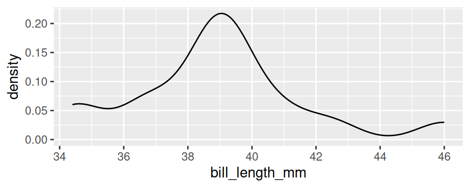
Besides the shift from bars to a smooth line, the density plot also changes the y-axis to feature a quantity called “density”. We will return to define this term later in the course, but it’s sufficient to know that the values on the y-axis of a density plot are rarely useful. The important information is relative: an area of the curve with twice the density as another area has roughly twice the number of observations.
The density plot, like the histogram, offers the ability to balance fidelity to the individual observations against a more general shape of the distribution. You can tip the balance to feature what you find most interesting by adjusting the bandwidth of the density plot.
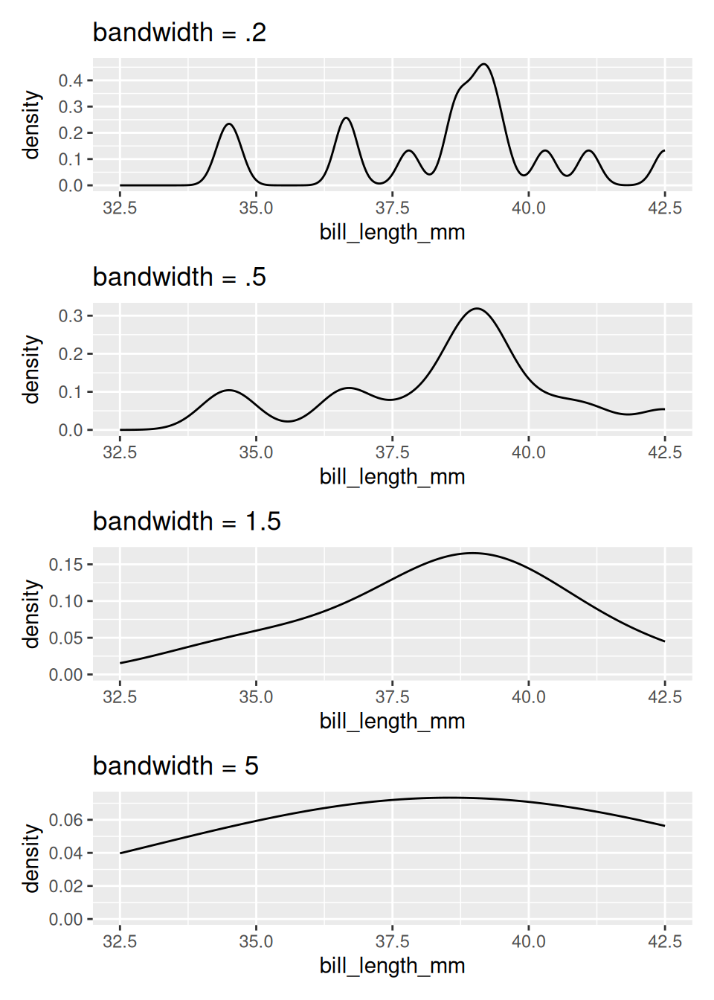
A density curve tends to convey the overall shape of a distribution more quickly than does a histogram, but be sure to experiment with different bandwidths. Strange but important features of a distribution can be hidden behind a density curve that is too smooth.
Violin plots
Often we’re interested not in the distribution of a single variable, but in the way the distribution of that variable changes from one group of observational units to another. Let’s add this item to our list of criteria for a statistical graphic.
There are several different ways to compare the distribution of a variable across two or more groups, but one of the most useful is the violin plot. Here is a violin plot of the distribution of bill length across the three species of penguins.
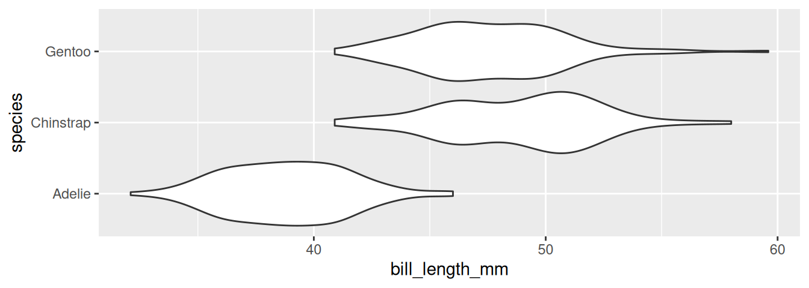
The distribution of bill length in each species is represented by a shape that often looks like a violin but is in fact a simple density curve reflected about its x-axis. This means that you can tinker with a violin plot the same as a density plot, but changing the bandwidth.
If this plot type looks familiar, you may have seen its cousin, the box plot.
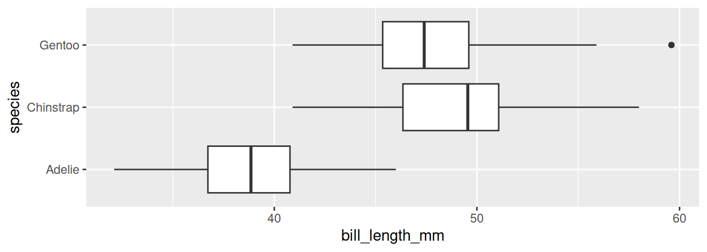
The box plot conveys a similar story to the violin plot: Adelies have shorter bills than Chinstraps and Gentoos. Box plots have the advantage of requiring very little computation to construct2, but in a world of powerful computers, that is no longer remarkable. What they lack is a “smootness-knob” that you can turn to perform more or less smoothing. For this reason, violin plots are a more flexible alternative to box plots.
Describing Distributions
The desideratum that we used to construct the histogram and the violin plot include the ability to “depict general characteristics of the distribution”. The most important characteristics of a distribution are its shape, center, and spread.
When describing the shape of a distribution in words, pay attention to its modality and skew. The modality of a distribution captures the number of distinct peaks (or modes) that are present.
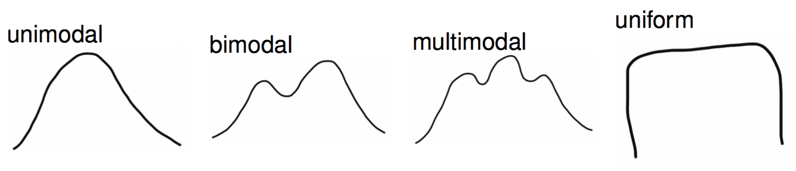
A good example of a distribution that would be described as unimodal is the original density plot of bill lengths of 16 Adelie penguins (below left). There is one distinct peak around 39. Although there is another peak around 34, it is not prominent enough to be considered a distinct mode. The distribution of the bill lengths of all 344 penguins (below right), however, can be described as bimodal.
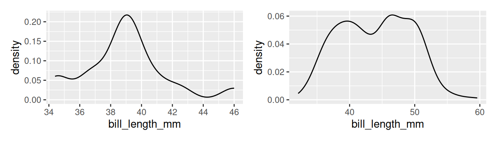
Multiple modes are often a hint that there is something more going on. In the plot to the right above, Chinstraps and Gentoo penguins, which are larger, are clumped under the right mode while the smaller Adelie penguins are dominant in the left mode.
The other important characteristic of the shape of a distribution is its skew.
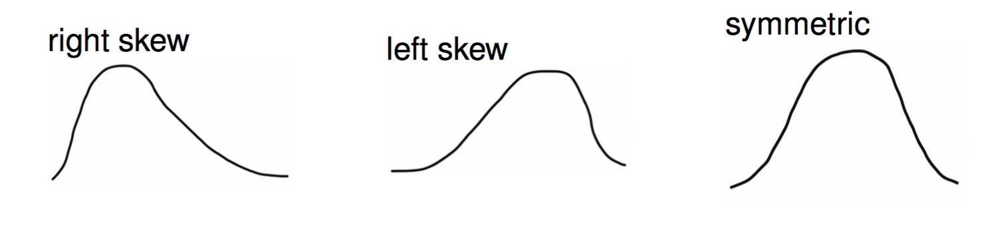
The skew of a distribution describes the behavior of its tails: whether the right tail stretches out (right skew), the left tail stretches out (left skew), or if both tails are of similar length (symmetric). An example of a persistently right skewed distribution is household income in the United States:

In the US, the richest households have much much higher incomes than most, while the poorest households have incomes that are only a bit lower than most.
When translating a graphical summary of a distribution into words, some degree of judgement must be used. When is a second peak a mode and when is it just a bump in the distribution? When is one of the tails of a distribution long enough to tip the description from being symmetric to being right skewed? You’ll hone your judgement in part through repeated practice: looking at lots of distributions and readings lots of descriptions. You can also let the questions of inclusion and omission be your guide. Is the feature a characteristic relevant to the question you’re answering and the phenomenon you’re studying? Or is it just a distraction from the bigger picture?
Modality and skew capture the shape of the distribution, but how do we describe its center and spread? “Eyeballing it” by looking at a graphic is an option. A more precise option, though, is to calculate a statistic.
Constructing Numerical Summaries
Statistics is both an area of academic study and the object of that study. Any function of a data set - a mean or median, a count or proportion - is a statistic. So the field of statistics IS the study of functions of data, how those functions behave when data is random (more on this later in the course), and what we can learn from these functions.
A statistic is, fundamentally, a mathematical function where the data is the input and the output is the observed statistic (aka a value).

Statisticians don’t just study statistics, though, they construct them. A statistician gets to decide the form of \(f\) and, as with graphics, they construct it to fulfill particular needs: the desiderata.
To examine the properties of common statistics, let’s move to an even simpler data set: a vector called x that holds 11 integers.
\[8, 11, 7, 7, 8, 11, 9, 6, 10, 7, 9\]
Measures of Center
The mean, the median, and the mode are the three standard statistics used to measure the center of a distribution. Despite their ubiquity, these three are not carved somewhere on a stone tablet. They’re common because they’re useful and they’re useful because they were constructed very thoughtfully.
Let’s start by laying out some possible criteria for a measure of center.
The (arithmetic) mean fulfills all of these needs.
The function in R: mean()
\[ \frac{8 + 11 + 7 + 7 + 8 + 11 + 9 + 6 + 10 + 7 + 9}{11} = \frac{93}{11} = 8.45 \]
The mean synthesizes the magnitudes by taking their sum, then keeps that sum from getting larger than any of the observations by dividing by \(n\). In order to express this function more generally, we use the following notation
\[ \bar{x} = \frac{x_1 + x_2 + \ldots + x_n}{n} \]
where \(x_1\) is the first observation, \(x_2\) is the second observation, and so on till the \(n^{th}\) observation, \(x_n\); and \(\bar{x}\) is said “x bar”.
The mean is the most commonly used measure of center, but has one notable drawback. What if one of our observations is an outlier, that is, has a value far more extreme than the rest of the data? Let’s change the \(6\) to \(-200\) and see what happens.
\[ \frac{8 + 11 + 7 + 7 + 8 + 11 + 9 - 200 + 10 + 7 + 9}{11} = \frac{-113}{11} = -10.27 \]
The mean has plummeted to -10.27, dragged down by this very low outlier. While it is doing it’s best to stay “as close as possible to all of the observations”, it isn’t doing a very good job of representing 10 of the 11 values.
With this in mind, let’s alter the first criterion to inspire a different statistic.
If we put the numbers in order from smallest to largest, then the number that is as close as possible to all observations will be the middle number, the median.
The function in R: median()
\[ 6 \quad 7 \quad 7 \quad 7 \quad 8 \quad {\Large 8} \quad 9 \quad 9 \quad 10 \quad 11 \quad 11\]
In other words, the median is the number where half the data set is above that number, and half the data is below that number. As measured by the median, the center of this distribution is 8 (recall the mean measured 8.45). If there were an even number of observations, the convention is to take the mean of the middle two values.
The median has the desirable property of being resistant (or “robust”) to the presence of outliers. If the lowest number (6) is changed to -200, half the data is still below 8 as before. See how it responds to the inclusion of -200.
\[ -200 \quad 7 \quad 7 \quad 7 \quad 8 \quad {\Large 8} \quad 9 \quad 9 \quad 10 \quad 11 \quad 11\]
With this outlier, the median remains at 8 while the mean had dropped to -10.27. This property makes the median the favored statistic for capturing the center of a skewed distribution.For example, we commonly see US median household income reported instead of US mean household income, as a few very high earners make the mean seem too large and misleading.
What if we took a stricter notion of “closeness”?
That leads us to the measure of the mode, or the most common observation. For our example data set, the mode is \(7\).
\[ 6 \quad {\Large 7 \quad 7 \quad 7} \quad 8 \quad 8 \quad 9 \quad 9 \quad 10 \quad 11 \quad 11\]
While using the mode for this data set is sensible, it is common in numerical data for each value to be unique3. In that case, there are no repeated values, and no identifiable mode. For that reason, it is unusual to calculate the mode to describe the center of a numerical variable.
For categorical data, however, the mode is very useful. The mode of the species variable among the Palmer penguins is “Adelie”. Trying to compute the mean or the median species will leave you empty-handed. This is one of the lingering lessons of the Taxonomy of Data: the type of variable guides how it is analyzed.
Measures of Spread
There are many different ways to capture spread or dispersion of data. Here are some basic desiderata we might hope to achieve with a measure of spread.
These desiderata are not met by every measure of spread. Here is one such measure of spread which does not meet all three!
Range
The range of a set of numbers is simply the maximum number in the dataset minus its minimum.
\[ range = max - min\]
For our set of numbers, the range will be \(5\).
\[ {\Large 6} \quad {\ 7 \quad 7 \quad 7} \quad 8 \quad 8 \quad 9 \quad 9 \quad 10 \quad 11 \quad {\Large 11}\]
Although the first two criterion above are met by the range, the third one is not. The reason is that if we add a number to our set which is greater than the maximum value, or smaller than the minimum value, the value of range will change. Therefore, increasing our sample size \(n\) could cause our statistic to grow or shrink.
Here are some measures of spread which do meet all three criterion. They do this by using incorporating some of the measures of center that we have already talked about, such as the mean and the median.
The Sample Variance
The sample variance:
- Takes the differences from each observation, \(x_i\), to the sample mean \(\bar{x}\);
- squares them;
- adds them all up;
- then divides by \(n - 1\).
The function in R: var()
\[ s^2 = \frac{1}{n - 1} \sum_{i=1}^{n} \left( x_i - \bar{x}\right)^2 \] This formula is rather dense; don’t worry! We won’t ask you to memorize it. The key is that is fits the three criterion we were hoping for.
The distance \((x_i - \bar{x})^2\) will be small when \(x_i\) is close to the mean, and large when it’s not. This means the first two criterion are met. Additionally, because we are dividing by a number close to \(n\), (\(n-1\)), the statistic does not grow or shrink with \(n\). This means the last criterion is met!
One other question you might have: why the square?
The reason is that spread/distance is a positive quantity. Recall that the mean of our list was \(8.45\). Two numbers in our list, \(7\) and \(9\), are both \(1.45\) units away from the mean. However, \(7-8.45 = -1.45\) and \(9-8.45 = 1.45\). As part of the sum, we will have to add up \(-1.45\) and \(1.45\), which comes out to \(0\).
This means that the information from the two data points \(7\) and \(9\) have been canceled out! We don’t want this to happen, so we need to make all of the terms in the sum positive. The square takes care of that.
For our list:
\[ s^2 = 2.87 \] Consider the following two histograms for two different sets of data. They turn out to have the same variance! Then have the same mean (0), and variance is like measuring the “average distance from the mean” (squared). So both the blue and the red histogram are, on average, about the same square distance from their mean. Both are equally “spread out”, if variance is your chosen measure of spread.
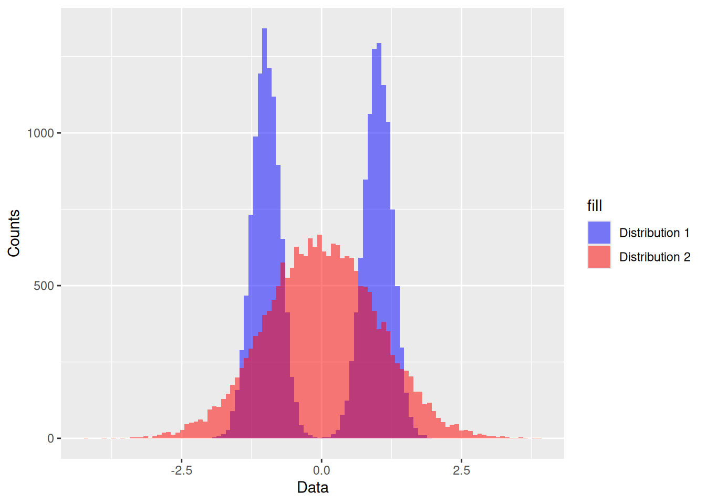
The Sample Standard Deviation
\[ s = \sqrt{\frac{1}{n - 1} \sum_{i=1}^{n} \left( x_i - \bar{x}\right)^2} \]
The function in R: sd()
The sample standard deviation \(s\) is the same as the sample variance \(s^2\): we’ve just taken the square root. One reason for using the sample standard deviation is that it at times is more interpret-able than the sample variance, since it’s measured in units rather than units squared.
For our list:
\[ s = 1.69 \] We can say, therefore, that each data point is about 1.7 units apart from each other.
While the sample variance and sample standard deviation are great for measuring symmetric data (which appear enough in statistics) and also show up a lot in the theory of some topics that we will later discover, they do have their faults.
Namely, when data is not symmetric, the square around \(x_i - \bar{x}\) can cause some issues. Asymmetrical data will have many values \(x_i\) (large or small) which are far from the mean \(\bar{x}\).
If \(x_i - \bar{x}\) is large, then \((x_i - \bar{x})^2\) will be very large. Therefore, \(s^2\) and \(s\) can produce values that are overestimates of the spread of most of the data. Here are two measures of spread which counter-act this.
IQR (Interquartile Range)
The IQR is the difference between the median of the larger half of the sorted data set, \(Q3\), and the median of the smaller half, \(Q1\).
The function in R: IQR()
\[ IQR = Q_3 - Q_1 \]
Let’s calculate the IQR for the list of eleven numbers we’ve been working with. First, we find the median of our dataset. That’s \(8\). Then, we split the data into two halves of five. Then we find the medians of these halves. and take the difference. These steps are visualized below.
\[ 6 \quad 7 \quad {\Large 7 \quad 7} \quad 8 \quad {\large 8} \quad 9 \quad {\Large 9 \quad 10} \quad 11 \quad 11\]
We have that \(Q_3 = 9.5\) and \(Q_1 = 7\). Then:
\[IQR = 9.5−7 = 2.5\]
The reason the IQR works well for asymmetric data is because the measure of center it’s based on is the median, not the mean. The median, being just the middle point of the data and not a value obtained by calculation of all the numbers in a list, is not impacted when extreme values are tacked onto the end of the list.
Why called a “quart” here, quart here is for “quarter”. The median is the point where half the data is above and half is below. Q1 is the point where one quarter of the data is below, the first quantile. The “second” quantile is then the median itself, and the “third” quantile is the point that 75 percent of the data or 3 quarters is below. So the IQR contains half the data, half the data lies between Q1 and Q3.
Recall our friend the boxplot,

These rectangles you see here are the IQR for each species, the ends of each rectangle are Q1 and Q3, and half of each species lives in between them. The thick black line in the box is the median, notice it is not always exactly in the middle (skewed distribution).
The outer flat lines are called the “whiskers”. They are 1.5 times the IQR away from the edges of the box. Any point outside that range is an ``outlier’’ and denoted by a dot. There was one Gentoo with an abnormally large bill it seems!
Our final measure of spread is another option which is resillent against outliers, but is based off of the mean instead of the median.
Mean Absolute Deviation (MAD)
The \(MAD\) is very similar to the sample variance \(s^2\), except that:
- we divide by \(n\) rather than \(n-1\);
- we take the absolute value of \(x_i - \bar{x}\) instead of squaring it.
\[ MAD: \quad \frac{1}{n}\sum_{i = 1}^n |x_i - \bar{x}| \]
The key difference is the second one. The MAD is great for summarizing skewed distributions because it isn’t bothered too much by the presence of extreme values in a set of numbers. That’s because the absolute value bar just ensures a number is positive; it doesn’t further amplify that number by squaring it.
Summary
A summary of a summaries…this better be brief! Summaries of numerical data - graphical and numerical - often involve choices of what information to include and what information to omit. These choices involve a degree of judgement and knowledge of the criteria that were used to construct the commonly used statistics and graphics.
Footnotes
The
ggplot2package in R defaults to 30 bins across the range of the data. That’s a very rough rule-of-thumb, so tinkering is always a good idea.↩︎To read more about one common way to construct a box plot, see the
ggplot2documentation.↩︎That is, unless you aggregate! The aggregation performed by a histogram or a density plot is what allows us to describe numerical data as unimodel or bimodal.↩︎